Enterprise-grade Shopify ↔ Odoo 18 integration: multi-store connections, queue-based synchronization, real-time webhooks, automated scheduled imports and a live analytics dashboard — all inside Odoo.
Odoo 18 Multi-store Orders → Sale Orders Webhooks Queue Engine Analytics Dashboard
|
🔖
Multi-Store Instances
Connect any number of Shopify stores, each with its own token, company, sync window and product-matching policy.
|
🛒
Orders → Real Sale Orders
Imported orders become native sale orders with VAT-aware prices, shipping and discount lines, addresses and tracking.
|
⚡
Real-Time Webhooks
Public webhook endpoints queue incoming order / product / customer events the moment they happen in Shopify.
|
|
🔁
Queue-Based Sync Engine
Every import/export runs as a tracked queue job with status, retries and error messages — nothing fails silently.
|
🕑
Scheduled Automation
Cron jobs keep products, orders, customers and inventory in sync automatically with incremental date filters.
|
📊
Live Analytics Dashboard
KPI cards and Chart.js graphs for sales, revenue, customers and inventory — computed from your real sync data.
|
|
🔍
Barcode-First Product Search
Product dropdowns match exact barcode and SKU before names — built for fast e-commerce data entry.
|
📜
Full Audit Log
Every sync operation is recorded with level, message and related job; old logs are cleaned up automatically.
|
🧭
Production-Safe Matching
Optional strict mode maps order lines to existing products by SKU/barcode only — no accidental product creation.
|
All screenshots taken from a live Odoo 18 database.
The landing page of the app: live KPI cards and interactive charts computed from your synchronized data.
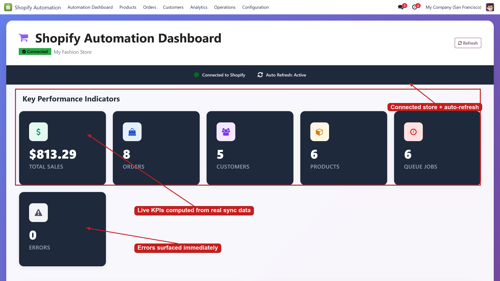
Scroll down for the interactive charts — monthly sales trend, revenue distribution, customer growth and inventory status:
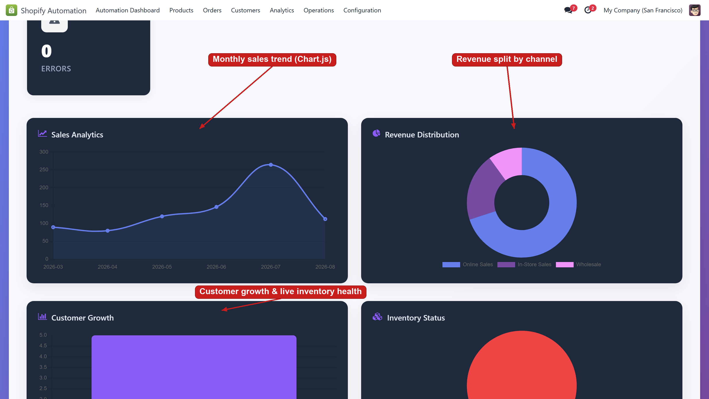
One record per Shopify store. Enter the shop URL and Admin API access token, test the connection, and control exactly how orders, products and customers are matched.
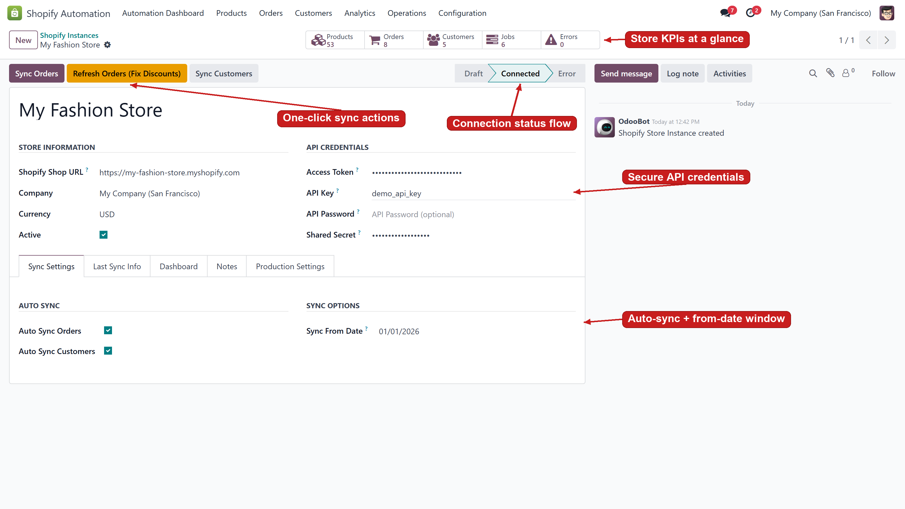
More matching rules (SKU/barcode lookup, fixed customer, discount-code mapping) live under the Production Settings tab.
Every Shopify order is mirrored with its number, customer, payment and fulfillment status, totals and sync state.
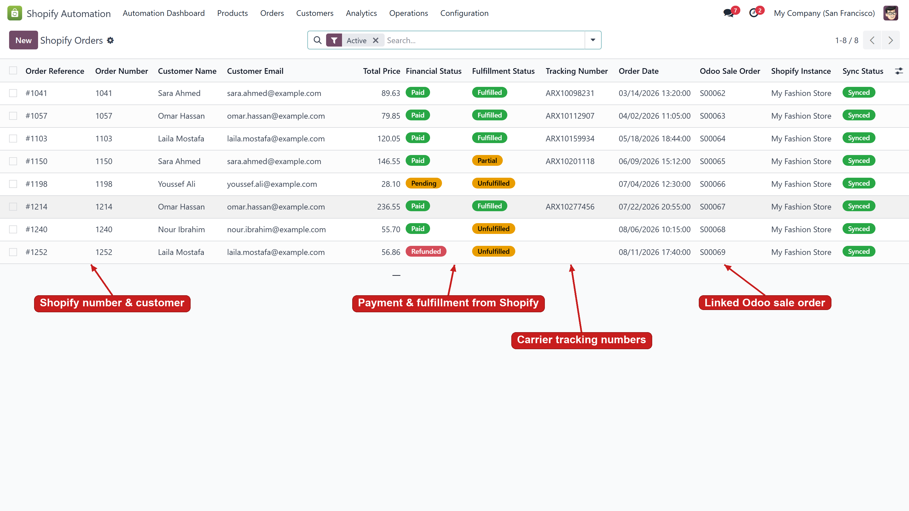
The full order mapping: line items with SKU and taxes, shipping & billing addresses, carrier tracking, discount codes and raw totals — plus a re-sync action to refresh a single order on demand.
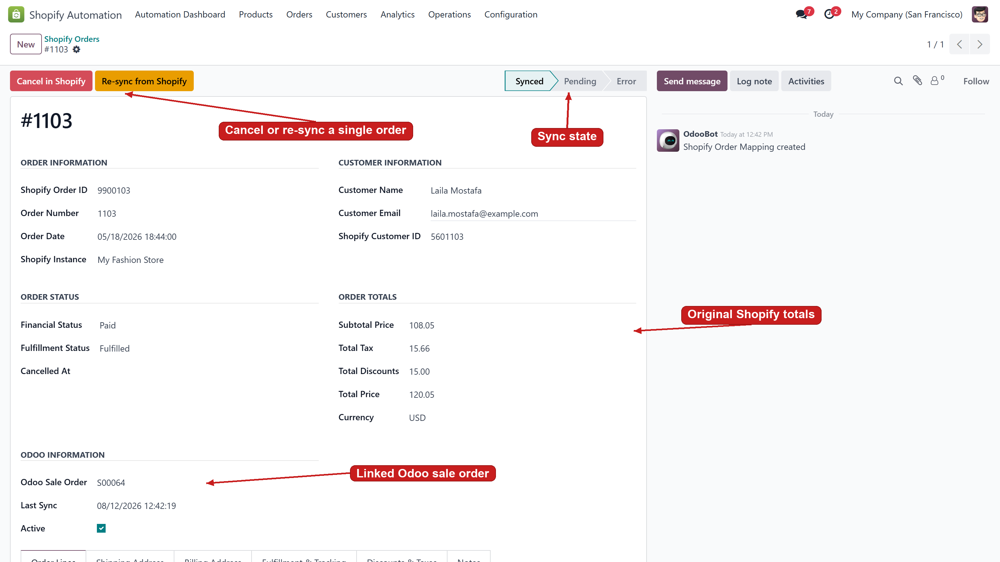
Imported orders are real Odoo sale orders: VAT-converted product lines, a shipping line and a discount line that keep the Odoo total identical to Shopify. A dedicated Shopify Order Details tab shows fulfillment, tracking and the original Shopify summary.
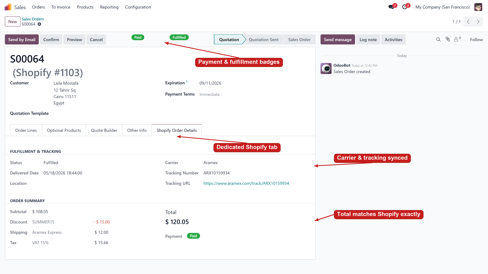
Shopify products linked to Odoo products with SKU, price, vendor, inventory quantity and sync status — importable in bulk or matched strictly against your existing catalog.
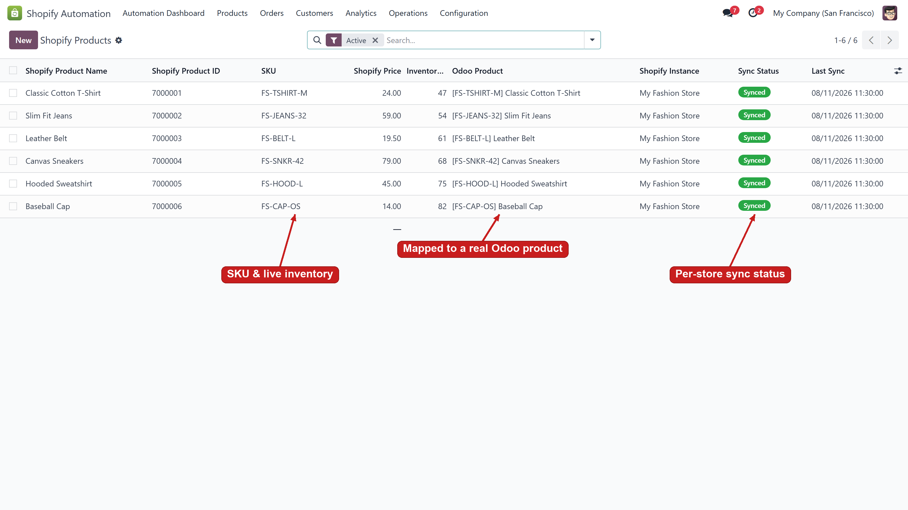
Shopify customers become Odoo partners — with email, phone, marketing opt-in, order count and lifetime spend.
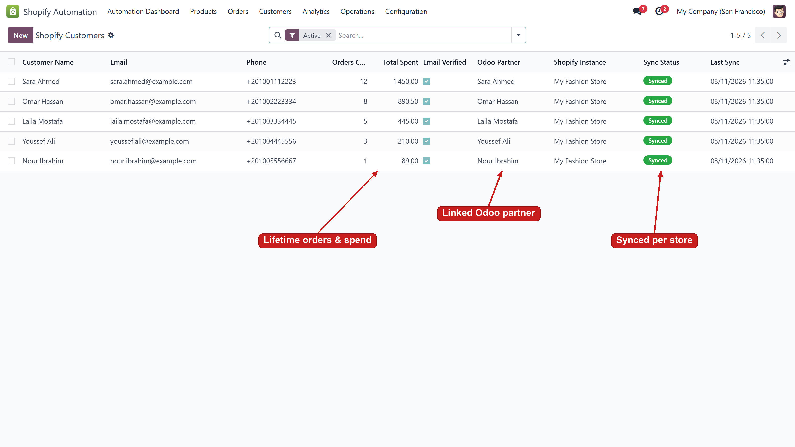
Each sync runs as a queue job with a clear lifecycle (pending → in progress → done / failed). Failed jobs keep their error message so problems are diagnosed in seconds.
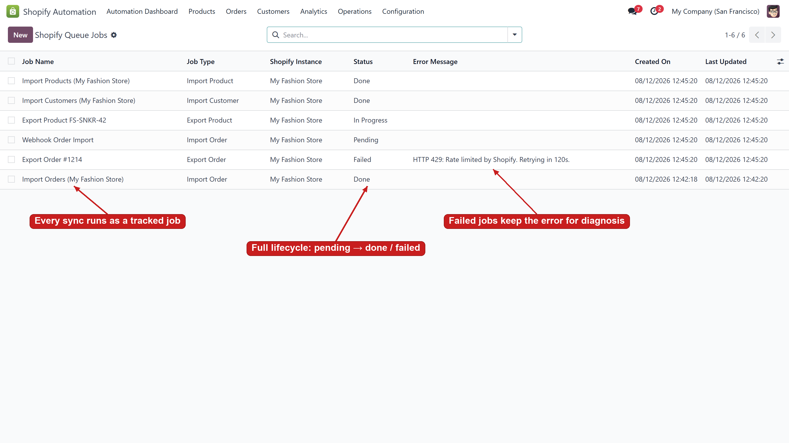
A central audit trail: info, warning and error entries for every import, export and webhook, cleaned up automatically after 30 days.
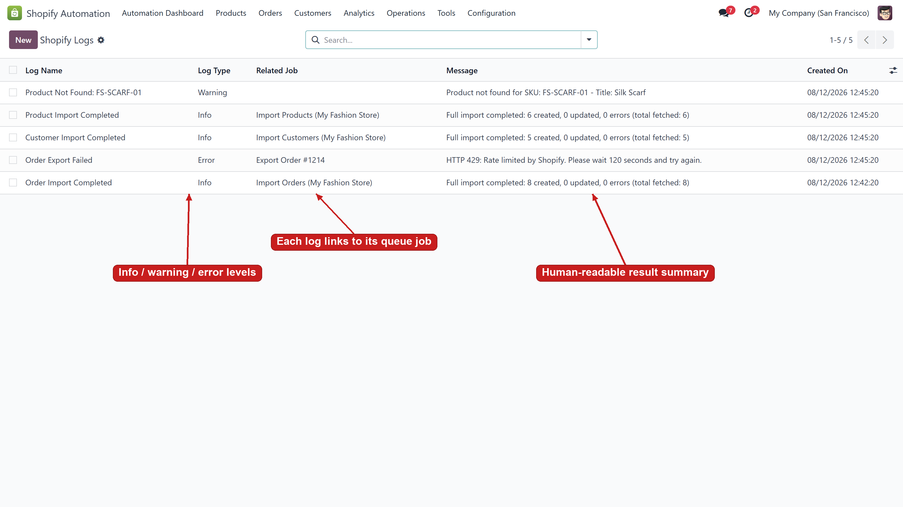
Register Shopify webhooks per store and per topic (orders/create, products/update, …) with delivery URL, HMAC signature verification, health statistics and success/error counters.
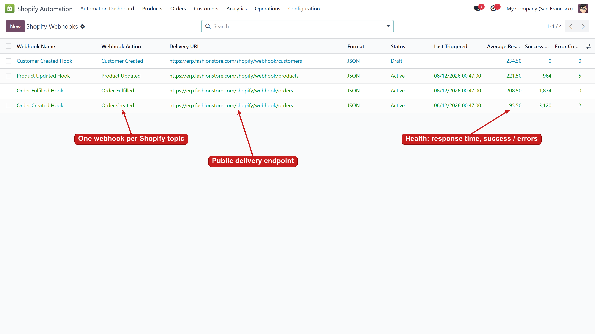
Need it now instead of waiting for the cron? Pick a store and a direction (import / export × products / orders / customers) and run it immediately.
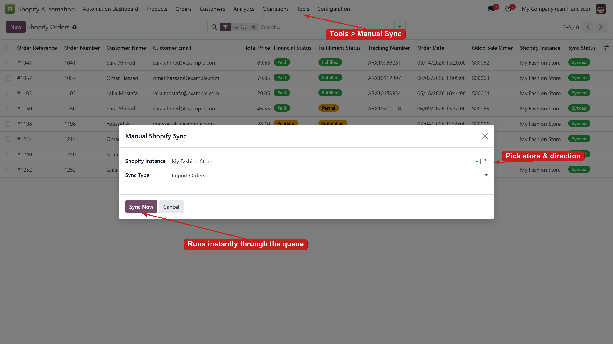
|
1
Connect
Create an instance with your shop URL and Admin API token, then Test Connection.
|
2
Configure
Choose the sync window, product matching policy and webhook topics per store.
|
3
Sync
Crons and webhooks keep data flowing through the queue; run the wizard any time for on-demand syncs.
|
4
Monitor
Watch KPIs on the dashboard; audit every operation in queue jobs and logs.
|
MS Shopify Automation
Developed & maintained by Mohamed Saied — Odoo 18 — LGPL-3